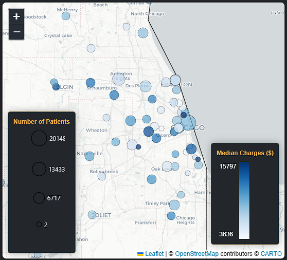
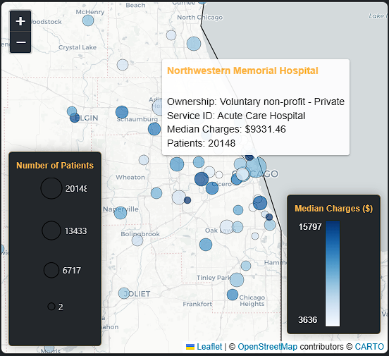
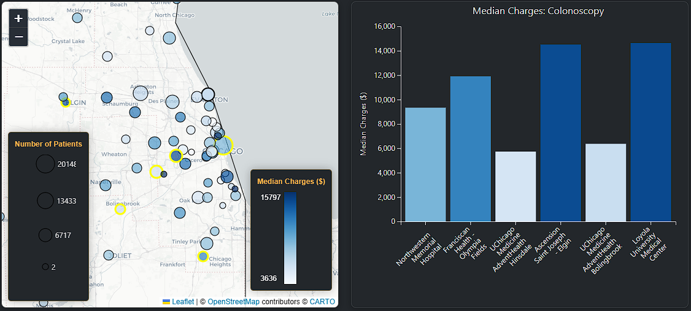
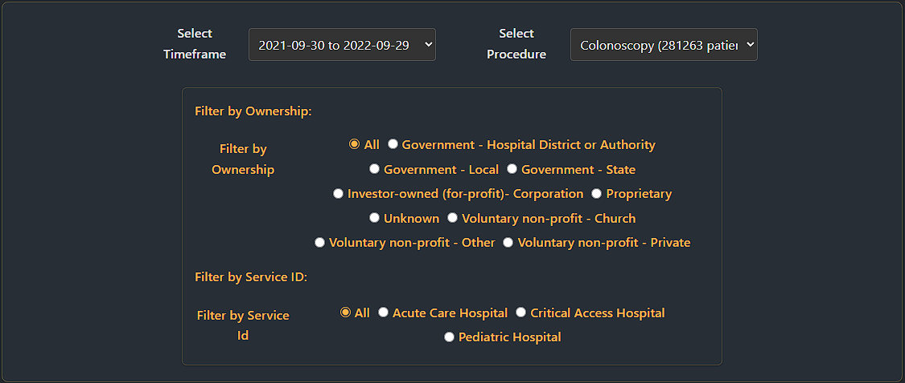

Illinois Healthcare Visualization
An interactive data visualization project analyzing Illinois hospital report card data. This project utilizes modern web visualization libraries to explore and present insights about healthcare costs, patient volumes, and hospital ownership impacts across the state.
Research Questions
- How does geographic location impact median procedure costs?
- How do median costs vary with patient volume?
- Are there differences in cost based on hospital ownership types?
Visualizations

Map of Chicago Hospitals with Median Costs

Interactive Tooltip Example

Combined Map and Bar Chart Visualization

Control Panel for Interactive Features
Technologies Used
JavaScript
D3.js
Leaflet
Observable Notebooks
Data Analysis
Links
Project Background
This project was created as part of CSCI 627 Data Visualization course. It demonstrates skills in data processing, interactive visualization design, and geospatial data representation while providing meaningful insights into healthcare cost patterns in Illinois.